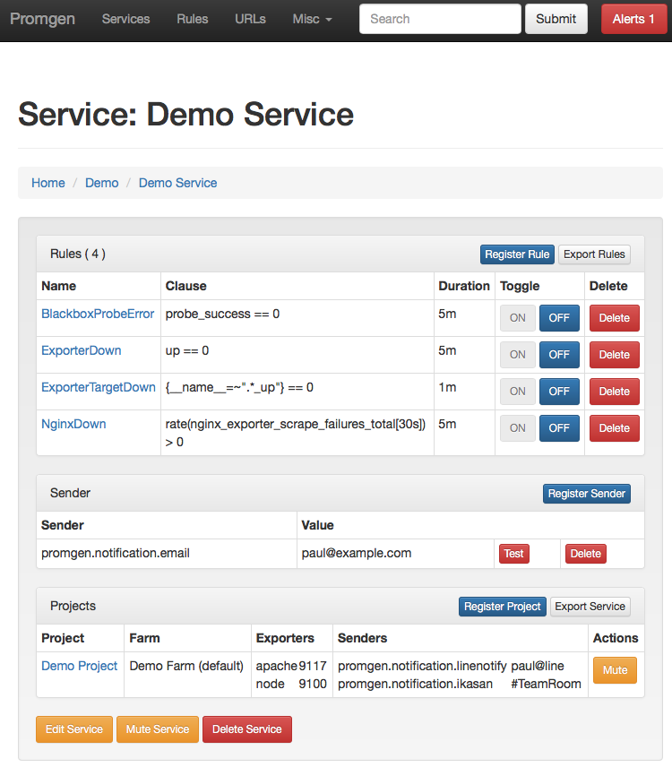

Management UI¶
The primary management UI is a Django application and many of the concepts that apply to a typical django application will apply to Promgen.
Running under uwsgi¶
Promgen can run under uwsgi using a similar configuration
[uwsgi]
module = promgen.wsgi
virtualenv = /path/to/promgen/virtualenv
plugins = python3
http-socket = :12345
# Or using a socket
# socket = /run/uwsgi/promgen.sock
master = true
processes = 5
threads = 5
buffer-size = 8192